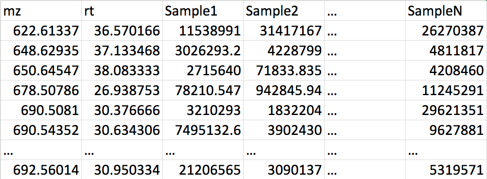
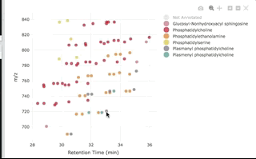

lipID is an extremely fast implementation for rule-based matching of lipid compounds from MS/MS spectra. While the package logic and libraries is based on LipidMatch package, the implementation has been completely rewritten to improve the performance (100x speed), and make it compatible with the latest R releases and tidyverse workflows.lipID also allows users to add custom libraries to search against.
Usage
Web App (Shiny)
Annotate lipidomics datasets interactively. Zero R skills required!
Installation
You can install lipID from GitHub with:
# install.packages("devtools") devtools::install_github("ahmohamed/lipID")
input
MS2 files
Files containing MS2 spectra should be converted to ms2 format. You can use MSConvert to do so.
Features table (optional)
A CSV file with MS1 features, intensities for each sample. First and second column should have MZ and RT values. (see example here)

Usage
Shiny App
This is an easy web interface that allows users to directly import and export results from lipID. To launch the app in browser:
Quick example in R
This is a basic example which shows you how to solve use lipID to annotate untargeted lipidomics:
library(lipID) # Replace with a path to your ms2 files or their containing folder. ms2_file <- "inst/extdata/ms2file.ms2" # Replace with a path to your features table CSV file features_file <- "inst/extdata/features.csv" # Get a list of libraries for matching libs <- get_libs(mode = 'Pos', acq = 'dda') annotated <- lipID(ms2_file, libs, features_file) head(annotated) #> # A tibble: 6 x 29 #> # Groups: mz, rt [5] #> mz rt name ms2_file precursor ms2_rt best_match partial_match confirmed #> <dbl> <dbl> <chr> <fct> <dbl> <dbl> <lgl> <dbl> <lgl> #> 1 735. 31.8 PC(3… ms2file 735. 31.8 TRUE 1 TRUE #> 2 787. 32.9 PC(3… ms2file 787. 32.8 TRUE 1 TRUE #> 3 789. 34.3 PC(3… ms2file 789. 34.2 TRUE 1 TRUE #> 4 747. 33.6 Plas… ms2file 747. 33.5 TRUE 1 TRUE #> 5 747. 33.6 Plas… ms2file 747. 33.5 FALSE 1 TRUE #> 6 809. 31.6 PC(3… ms2file 809. 31.5 TRUE 1 TRUE #> # … with 20 more variables: ions_matched <chr>, fragments_intensity <dbl>, #> # Sample1 <dbl>, Sample2 <dbl>, Sample3 <dbl>, Sample4 <dbl>, Sample5 <dbl>, #> # Sample6 <dbl>, nearest_ms2 <lgl>, file <chr>, class_name <chr>, #> # n_and <int>, n_or <int>, n_and_true <int>, n_or_true <int>, #> # sum_composition <chr>, odd_chain <lgl>, modifs <chr>, and_cols <lgl>, #> # or_cols <lgl>
You can then interactively plot the results:
plot_features(annotated, color_by = "class_name")
